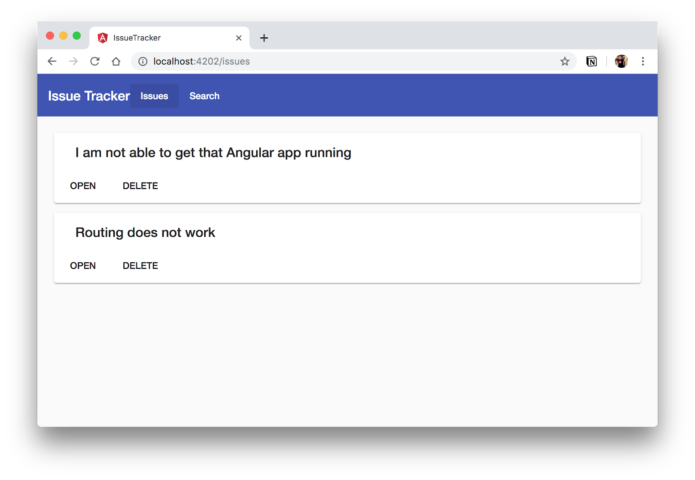
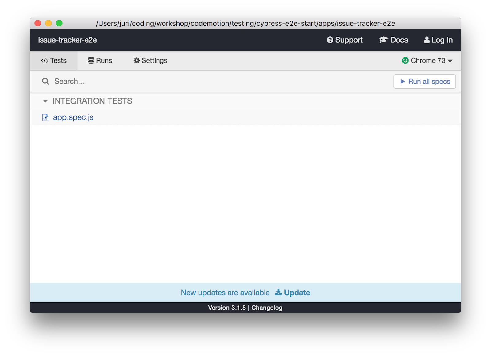
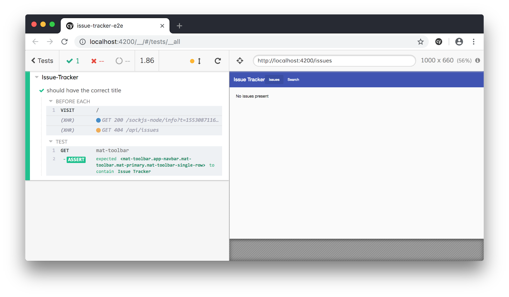
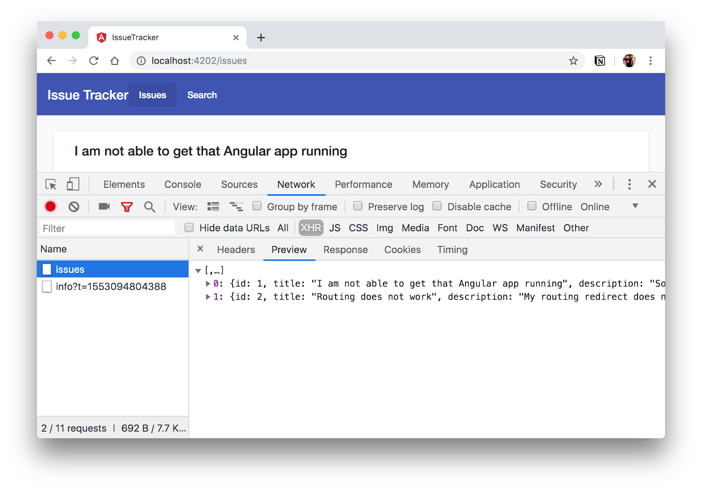

In this codelab we're going to learn about e2e testing with Cypress.
In this codelab we're going to explore Angular Elements, a new way for creating Custom Elements out of plain normal Angular Components.
What you'll learn
- How to setup Cypress within Nrwl's NX workspace
- How to write tests with Cypress
- How to fake HTTP requests with fixtures
- How to modify existing fixtures at runtime
- How to test confirmation dialogs
What you'll need
- A browser, ideally Chrome
- VSCode (or any other code editor of your preference with TypeScript & Angular support)
Download the starter project:
Unzip the code and open it with Visual Studio Code (or your respective code editor of choice).
Install npm packages and start the app
After unpacking the files, open up a terminal (you can also do that from within Visual Studio Code) at the location where you unzipped your files.
Execute npm install (from your command line) to download all the necessary packages.
Run the app
Once installed, open your terminal (also from within VSCode) and type
$ npm startYou should ideally see something like this in your browser:

What you see in your code editor is a Nrwl NX workspace. NX (see docs here) is an extension on top of the Angular CLI to make things more productive with a special focus for enterprises. In fact, Nx promotes the so-called monorepo, a single repository where you divide your code into "apps" and "libs".
For this codelab we're particularly interested in the e2e test setup Nx gives us. The sample project already contains a generated app and it's companion e2e test app configured to run Cypress.

If you open up the package.json at the root of the workspace, you'll find various npm scripts under which there's also one for running the app as well as for running our e2e tests:
{
"scripts": {
"ng": "ng",
"start": "concurrently \"npm:start:*\" ",
...
"e2e:watch": "ng e2e issue-tracker-e2e --watch"
...
}
}Execute npm run e2e:watch to start the Cypress Test Runner UI. After the project compiles the following UI should open:

If you open the apps/issue-tracker-e2e/src/integration/app.spec.ts you can already find a first test that verifies the title of our app.
describe('Issue-Tracker', () => {
beforeEach(() => {
cy.visit('/');
});
it('should have the correct title', () => {
cy.get('mat-toolbar').should('contain', 'Issue Tracker');
});
});That's the test you see in the test runner UI. Click the "Run all specs" button or directly click on the integration test to execute it:

When our app opens, the app automatically redirects to the /issues route. We've implemented that in the app-routing.module.ts.
const routes: Routes = [
{
path: '',
redirectTo: 'issues',
pathMatch: 'full'
},
{
path: 'issues',
loadChildren: './issue-list/issue-list.module#IssueListModule'
}
];Add another test to the app.spec.ts that verifies the correct functioning of this redirect.
it('should redirect to the issues', () => {
...
});Hint: You can use the cy.url() and then assert in the same way as in the previous test for the app title.
In this test we'd like to verify our issue list gets rendered properly.

If we inspect the browser's XHR requests, we can see that whenever we navigate to the issues list, a request to /api/issues is being made to retrieve the list of issues to visualize.

We don't want to call our actual server, but rather we want to provide a fixture for this request.
Create a new test spec file called issues.spec.ts.
import '../support';
describe('Issues', () => {
beforeEach(() => {
});
describe('List rendering', () => {
});
});To activate Cypress's fixture server, we need to add the cy.server() command in the beforeEach.
If you look in the fixtures folder, there's already an issues.json file which I created for you. We can use that as a response when an HTTP call to /api/issues happens. To do so, we can use Cypress's cy.route() command (docs) and provide the path to the fixtures file.
import '../support';
describe('Issues', () => {
beforeEach(() => {
cy.server();
});
describe('List rendering', () => {
beforeEach(() => {
cy.route('GET', '/api/issues', 'fx:issues.json').as('api_issues');
cy.visit('/issues');
});
});
});Finally, let's add the test to see whether the list of issues gets rendered by our Angular app.
import '../support';
describe('Issues', () => {
...
describe('List rendering', () => {
....
it('should render a list of issues', () => {
cy.get('[data-tuid="issue-card"]').should('have.length', 2);
});
});
});Note, data-tuid is the tag the app developer has added to each card to easily find it. Check the corresponding source file: apps/issue-tracker/src/app/shared/components/issue-list/issue-list.component.html
Run the test file and verify it passes

The previous test properly verifies that the data gets rendered. Let's also verify the API request is properly being made. We can do that with cy.wait(...).
import '../support';
describe('Issues', () => {
...
describe('List rendering', () => {
beforeEach(() => {
cy.route('GET', '/api/issues', 'fx:issues.json').as('api_issues');
cy.visit('/issues');
});
it('should render a list of issues', () => {
cy.wait('@api_issues');
cy.get('[data-tuid="issue-card"]').should('have.length', 2);
});
});
});Note the "@" symbol. This is how you address aliases in Cypress. In the fixture setup in the beforeEach, we added .as(‘api_issues'). With that instruction we created an alias which we can later point to with the @ symbol.
Adding a data attribute as a hook point for being used later in Cypress tests is a known best practice. This makes tests more durable even when we change the DOM element. We could also use a class, but those are usually just for styling, so the data- attributes fit in nicely.
As a result we're going to create a lot of selectors that look like the one we already used:
cy.get('[data-tuid="issue-card"]')Let's refactor that by extending the cy object with a custom getEl function. Open the support/commands.ts file and add the following content.
declare namespace Cypress {
// tslint:disable-next-line interface-name
interface Chainable {
getEl: (identifier: string) => Chainable;
}
}
Cypress.Commands.add(
'getEl',
{ prevSubject: 'optional' },
(subject, identifier) => {
if (subject) {
return subject.find(`[data-tuid="${identifier}"]`);
} else {
return cy.get(`[data-tuid="${identifier}"]`);
}
}
);The first part of the pasted code extends the current TypeScript definition with the new getEl function.
The second part implements it by using Cypress.Commands.add(...).
Inspect the implementation and try to understand what's going on (here are the docs).
Now that we have implemented this custom command, let's refactor our previous test in the issues.spec.ts to the following:
it('should render a list of issues', () => {
...
cy.getEl('issue-card').should('have.length', 2);
});When the issue list does not return any records, a message is shown to the user. Create a test that verifies the info message is shown properly.
The element's data-tuid is "no-issues". You can check the implementation directly here: apps/issue-tracker/src/app/shared/components/issue-list/issue-list.component.html
Here's the test scaffold. Just add it to the issues.spec.ts file.
describe('error handling', () => {
it('should render a message if there are no issues', () => {
...
});
});When the user tries to delete a record, he should get a confirmation dialog to make sure he knows what he is doing.

Let's write a test that makes sure the confirmation is shown to the user during the delete operation.
We add the test directly to the issues.spec.ts inside the "List rendering" spec:
describe('List rendering', () => {
...
it('should ask for confirmation when deleting an issue', () => {
...
})
})Cypress automatically closes alert and confirm dialogs to not block the test run. We can however listen whether such confirm dialog has been shown. This can be achieved with the cy.stub() command as follows:
it('should ask for confirmation when deleting an issue', () => {
const stub = cy.stub();
cy.on('window:confirm', stub);
});Retrieve the delete button of the 1st card you find in the issue list, click the button and then assert whether the confirm dialog has been shown with this command:
it('should ask for confirmation when deleting an issue', () => {
const stub = cy.stub();
cy.on('window:confirm', stub);
cy.get...
.click()
.then(() => {
expect(stub.log().getCalls().length).eq(1);
});
});When the user clicks the delete button of a issue, behind the scenes an XHR DELETE request is sent to the backend API. We want to make sure the id is properly passed on to that request.
describe('List rendering', () => {
...
it('should include the id in the request when deleting an issue', () => {
...
});
});There are different strategies for doing this. Actually you should already be able to do this with the things you learned so far. However, we want to take a specific one in order to explore some new Cypress APIs.
First, we need to fake the call to the server for the DELETE request. Since we don't exactly know the ID, use * as placeholder. Implement the fake response using cy.route(..)
it('should include the id in the request when deleting an issue', () => {
cy.route('DELETE',...).as('delete_call');
});Next, we grab the delete button of the first card in the issue list.
it('should include the id in the request when deleting an issue', () => {
...
cy.getEl('issue-card')
.first()
.getEl('delete-button')
.then(buttonEl => {
...
});
});Note the .then(buttonEl => { ... }) callback. This allows us to inspect the button because we need to read the id from it's data-tuid-id property.
We can now retrieve the id via the data(..) API, click the button and inspect the URL
...
cy.getEl('issue-card')
.first()
.getEl('delete-button')
.then(buttonEl => {
const id = buttonEl.data('tuid-id');
buttonEl.click();
cy.wait('@delete_call')
.its('url')
.should('include', `/${id}`);
});An alternative way for asserting the URL of the XHR call is by directly inspecting it:
// alternatively
cy.wait('@delete_call').then(httpReq => {
const requestData = httpReq.url;
expect(httpReq.url.endsWith(`/${id}`)).to.be.true;
});Congrats. There's much more to explore. Go to the official docs: